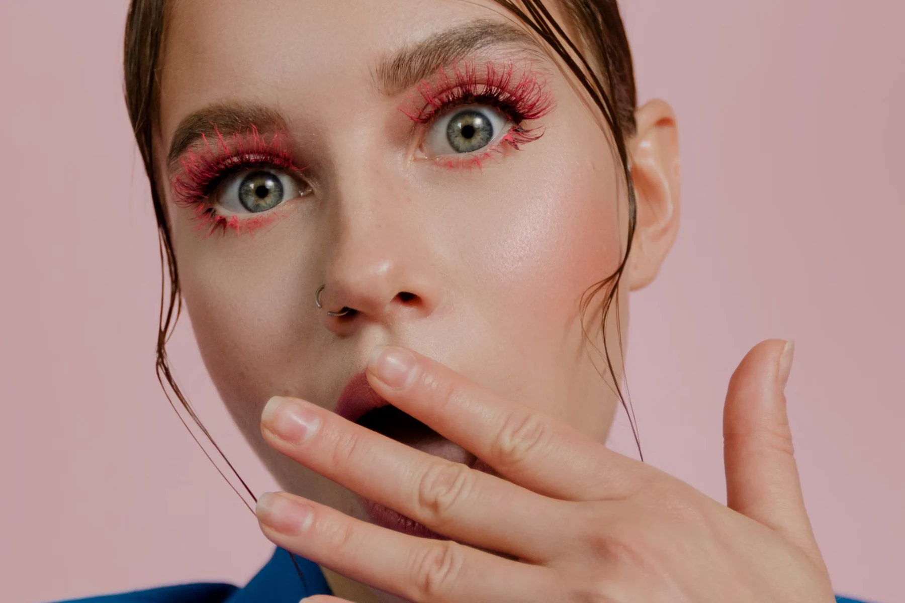
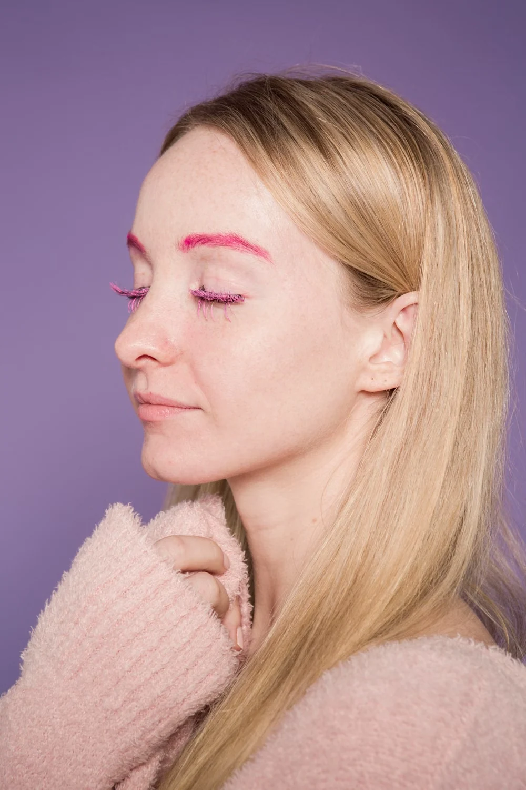

A little detail. A whole mood.
Your eyes.
Main character.
A softer flutter or a little more drama. Explore a lash look that feels like you.
Find your lash style
Soft. Sculpted. Entirely your style.The lash edit · sample services
Not every eye
needs the same set.
Start with the finish you like. A real appointment would include a consultation to discuss your preferences and suitability.

Your selected direction
Classic set
A lighter, defined look with an individual-lash approach. Sample service: $95 · 90 minutes.
Editorial imagery illustrates the mood, not treatment results.
A moment that is yours
Make room
for a little you-time.
A concept for an independent lash artist: thoughtful service choices, a clear idea of the look and a calm appointment journey. No crowded menu. No guesswork about what comes next.
Before
your visit.
Which set should I choose?
Choose the direction you like, then discuss your preferences and suitability with a qualified lash professional. These sample categories illustrate the website experience.
Can I book through this demo?
No. The planner is a local preview. It does not show live availability, collect contact details or send an appointment request.
Are these real client photos?
These are licensed editorial stock photos. They are not represented as this fictional studio’s treatment results.